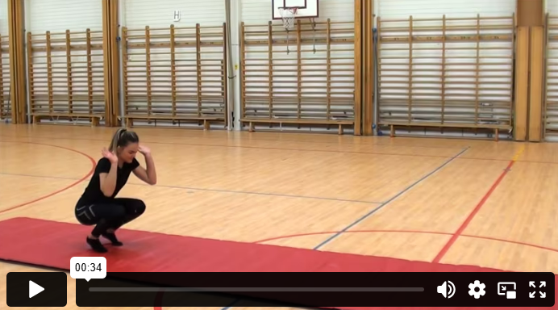
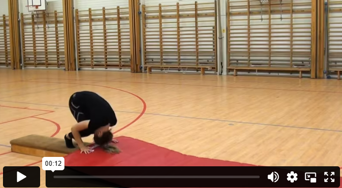
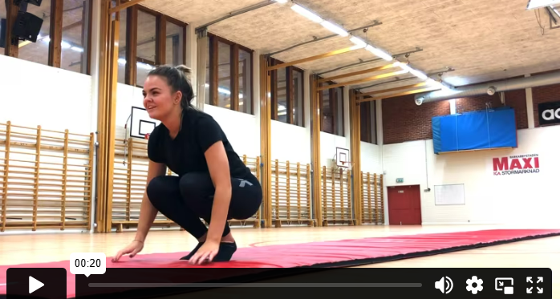
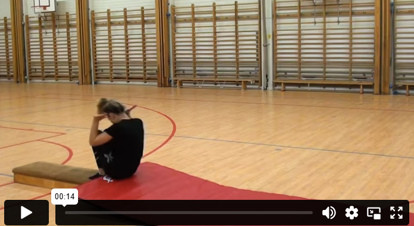

سجادة
شقلبة أمامية
شقلبة في ثلاث أشكال مختلفة. أولاً من وضع القرفصاء، ثم من وضع الوقوف، وأخيرًا شقلبة طويلة. قف بحيث تكون قدماك بعرض الكتفين، وضع راحتي يديك أمام ركبتيك مباشرة. عند أداء الشقلبة، من المهم أن تثبت الذقن على الصدر. ادفع برجليك لتحصل على دفع للأمام. حاول ألا تضع الوزن على الرأس – بل انزل على الجزء العلوي من الظهر بدلاً من ذلك. اجعل جسمك مضغوطًا، حافظ على ضم الساقين، وادفع يديك إلى الأمام عند النهوض. بهذه الطريقة، تنقل مركز الثقل إلى الأمام، مما يسهل عليك الوقوف.
شقلبة أمامية – على سطح مائل
إذا كنت تجد الشقلبات على الحصيرة صعبة، يمكنك التدرب على أدائها على سطح مائل قليلاً. ضع شيئًا تحت الحصيرة، مثل لوح القفز، بحيث تميل إلى الأسفل – سيساعدك ذلك على اكتساب السرعة اللازمة للقيام بالشقلبة بشكل كامل.
شقلبة خلفية
ححتى عند أداء الشقلبة الخلفية، حافظ على ذقنك مشدودًا. تخيل أن هناك ورقة لعب بين ذقنك وصدرك لا يمكنك إسقاطها. ضع يديك قرب أذنيك مع توجيه راحتي يديك لأعلى، وانبطح للخلف بحيث تلامس مؤخرتك الأرض أولًا. انحنِ ظهرك، وضع يديك على السجادة، وادفع نفسك للوقوف على قدميك مجددًا.
شقلبة خلفية – على سطح مائل
في البداية قد يكون من الأسهل أداء الشقلبة الخلفية على سطح مائل قليلًا إلى الأسفل. ضع شيئًا تحت الحصيرة، مثل لوح القفز. الانحدار يساعدك على اكتساب بعض السرعة، مما يجعل من الأسهل عليك إكمال الشقلبة.
